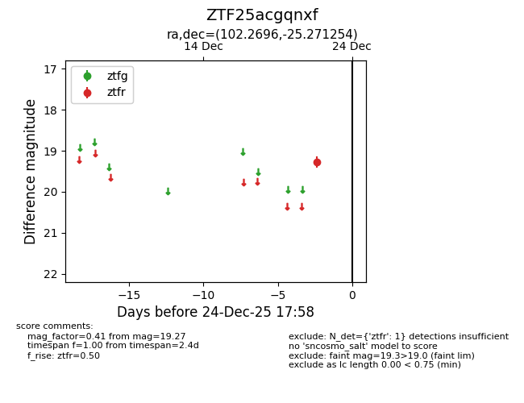
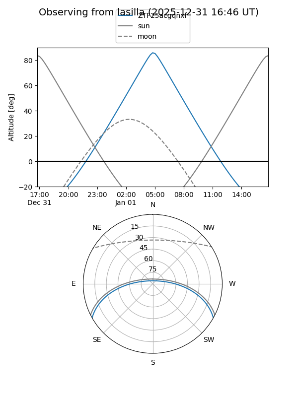
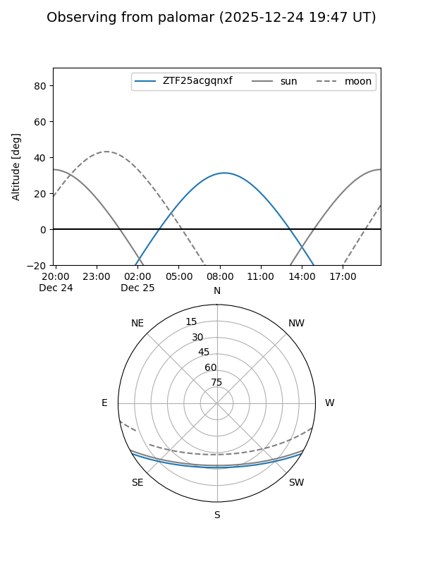

ZTF25acgqnxf
Target ZTF25acgqnxf at 2026-01-09 12:49
Aliases and brokers:
FINK: link
Lasair: link
ALeRCE: link
alt names
ZTF25acgqnxf (ztf,fink_ztf)
Coordinates:
equatorial (ra, dec) = 102.2696,-25.27125
equatorial (HMS+DMS) = 06:49:04.70,-25:16:16.52
galactic (l, b) = (235.4937,-11.70935)
Flags:
Photometry:
last ztfr=19.27
1 ztfr detections
Lightcurve

Visibility


Additional plots